Bottle replay evidence
Original-frame export is unavailable at 4K. Left panels reconstruct a source frame by best visual crop match near the recorded media timestamp; they are not retained browser originals. Right panels use the exact uploaded crop bytes. Open native images for full-resolution inspection.
v1-ocr-cold / 361:2:4
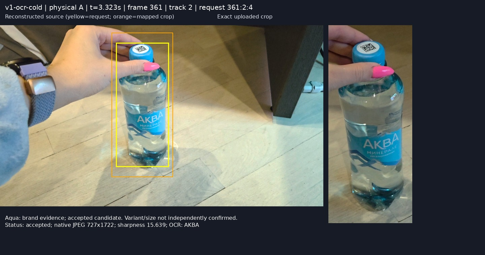
Aqua: brand evidence; accepted candidate. Variant/size not independently confirmed.
Exact native JPEG crop · Reconstructed native source{
"request_id": "361:2:4",
"run": "v1-ocr-cold",
"frame_id": 361,
"track_id": 2,
"session_version": 9,
"sample_video_timestamp": 3.322726,
"reconstructed_time": 3.1211864406779664,
"match_ncc": 0.9972302515790027,
"note": "Aqua: brand evidence; accepted candidate. Variant/size not independently confirmed.",
"panel": "361_2_4-panel.jpg",
"source": "361_2_4-source-reconstructed.jpg",
"crop": "../evidence/v1-ocr-cold/361_2_4-crop_jpeg.jpg",
"mapped_rect": {
"x": 1327,
"y": 89,
"w": 727,
"h": 1722
},
"ocr_text": "AKBA",
"sharpness": 15.639
}v1-ocr-cold / 374:4:13
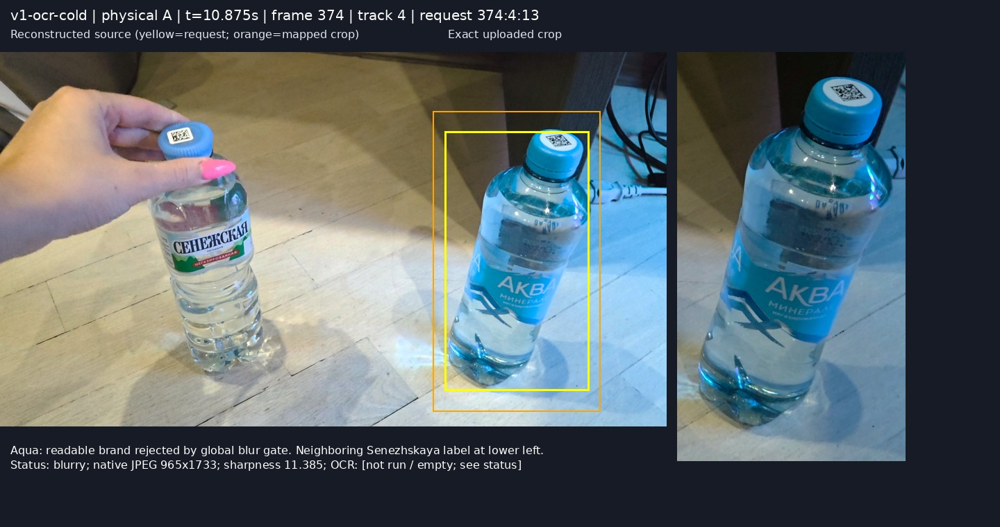
Aqua: readable brand rejected by global blur gate. Neighboring Senezhskaya label at lower left.
Exact native JPEG crop · Reconstructed native source{
"request_id": "374:4:13",
"run": "v1-ocr-cold",
"frame_id": 374,
"track_id": 4,
"session_version": 9,
"sample_video_timestamp": 10.875196,
"reconstructed_time": 10.595593220338984,
"match_ncc": 0.9979997981866637,
"note": "Aqua: readable brand rejected by global blur gate. Neighboring Senezhskaya label at lower left.",
"panel": "374_4_13-panel.jpg",
"source": "374_4_13-source-reconstructed.jpg",
"crop": "../evidence/v1-ocr-cold/374_4_13-crop_jpeg.jpg",
"mapped_rect": {
"x": 2494,
"y": 340,
"w": 965,
"h": 1733
},
"ocr_text": "",
"sharpness": 11.385
}v1-ocr-cold / 388:2:31
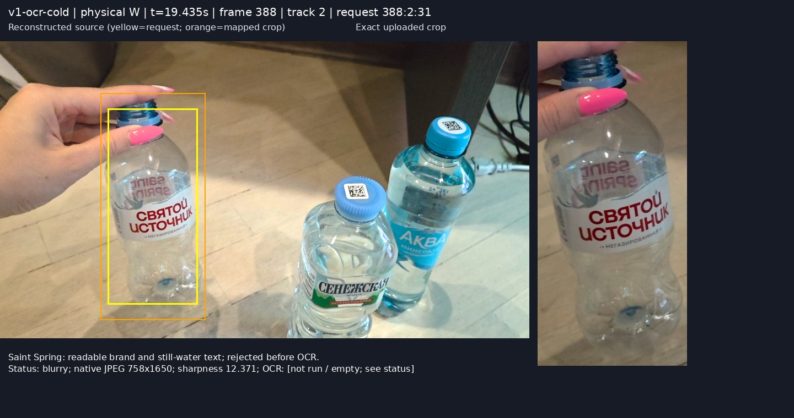
Saint Spring: readable brand and still-water text; rejected before OCR.
Exact native JPEG crop · Reconstructed native source{
"request_id": "388:2:31",
"run": "v1-ocr-cold",
"frame_id": 388,
"track_id": 2,
"session_version": 9,
"sample_video_timestamp": 19.43475,
"reconstructed_time": 19.301525423728812,
"match_ncc": 0.9951401733419285,
"note": "Saint Spring: readable brand and still-water text; rejected before OCR.",
"panel": "388_2_31-panel.jpg",
"source": "388_2_31-source-reconstructed.jpg",
"crop": "../evidence/v1-ocr-cold/388_2_31-crop_jpeg.jpg",
"mapped_rect": {
"x": 730,
"y": 377,
"w": 758,
"h": 1650
},
"ocr_text": "",
"sharpness": 12.371
}v1-ocr-cold / 404:2:61
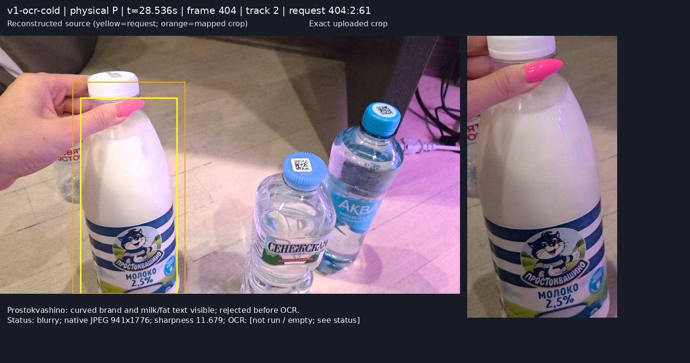
Prostokvashino: curved brand and milk/fat text visible; rejected before OCR.
Exact native JPEG crop · Reconstructed native source{
"request_id": "404:2:61",
"run": "v1-ocr-cold",
"frame_id": 404,
"track_id": 2,
"session_version": 9,
"sample_video_timestamp": 28.535681,
"reconstructed_time": 28.327966101694916,
"match_ncc": 0.9955100642063177,
"note": "Prostokvashino: curved brand and milk/fat text visible; rejected before OCR.",
"panel": "404_2_61-panel.jpg",
"source": "404_2_61-source-reconstructed.jpg",
"crop": "../evidence/v1-ocr-cold/404_2_61-crop_jpeg.jpg",
"mapped_rect": {
"x": 606,
"y": 384,
"w": 941,
"h": 1776
},
"ocr_text": "",
"sharpness": 11.679
}v1-ocr-cold / 422:6:109
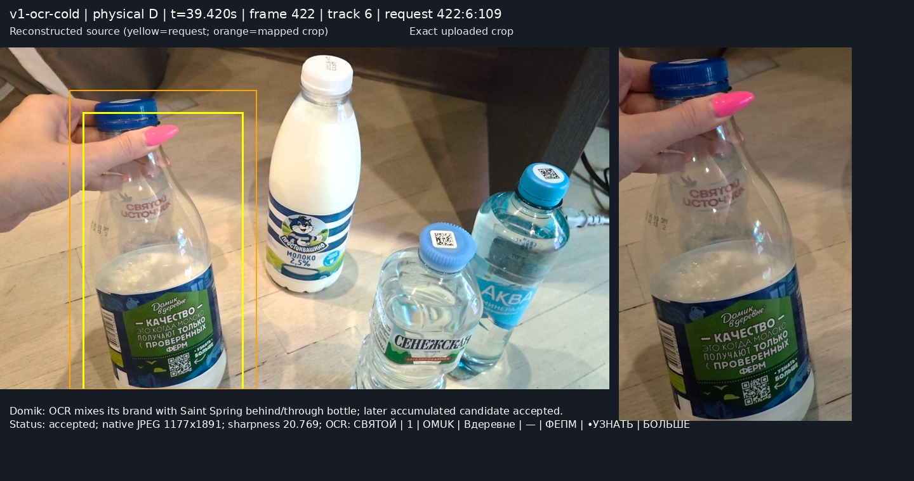
Domik: OCR mixes its brand with Saint Spring behind/through bottle; later accumulated candidate accepted.
Exact native JPEG crop · Reconstructed native source{
"request_id": "422:6:109",
"run": "v1-ocr-cold",
"frame_id": 422,
"track_id": 6,
"session_version": 9,
"sample_video_timestamp": 39.419704,
"reconstructed_time": 39.1935593220339,
"match_ncc": 0.9984917731481119,
"note": "Domik: OCR mixes its brand with Saint Spring behind/through bottle; later accumulated candidate accepted.",
"panel": "422_6_109-panel.jpg",
"source": "422_6_109-source-reconstructed.jpg",
"crop": "../evidence/v1-ocr-cold/422_6_109-crop_jpeg.jpg",
"mapped_rect": {
"x": 439,
"y": 269,
"w": 1177,
"h": 1891
},
"ocr_text": "СВЯТОЙ | 1 | OMUK | Вдеревне | — | ФЕПМ | •УЗНАТЬ | БОЛЬШЕ",
"sharpness": 20.769
}v2-warm-a / 437:4:122
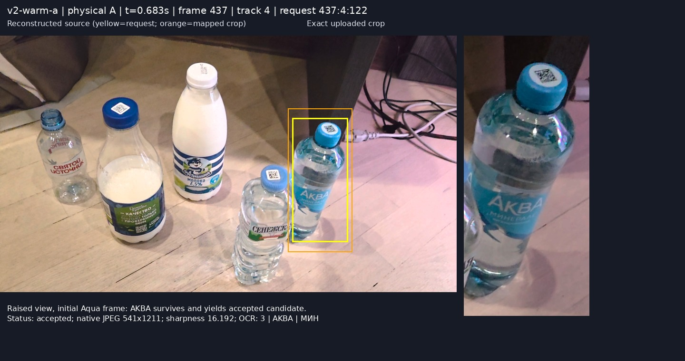
Raised view, initial Aqua frame: AKBA survives and yields accepted candidate.
Exact native JPEG crop · Reconstructed native source{
"request_id": "437:4:122",
"run": "v2-warm-a",
"frame_id": 437,
"track_id": 4,
"session_version": 11,
"sample_video_timestamp": 0.683088,
"reconstructed_time": 0.5992000000000001,
"match_ncc": 0.9964656990336236,
"note": "Raised view, initial Aqua frame: AKBA survives and yields accepted candidate.",
"panel": "437_4_122-panel.jpg",
"source": "437_4_122-source-reconstructed.jpg",
"crop": "../evidence/v2-warm-a/437_4_122-crop_jpeg.jpg",
"mapped_rect": {
"x": 2421,
"y": 612,
"w": 541,
"h": 1211
},
"ocr_text": "3 | AKBA | МИH",
"sharpness": 16.192
}v2-warm-b / 553:4:285
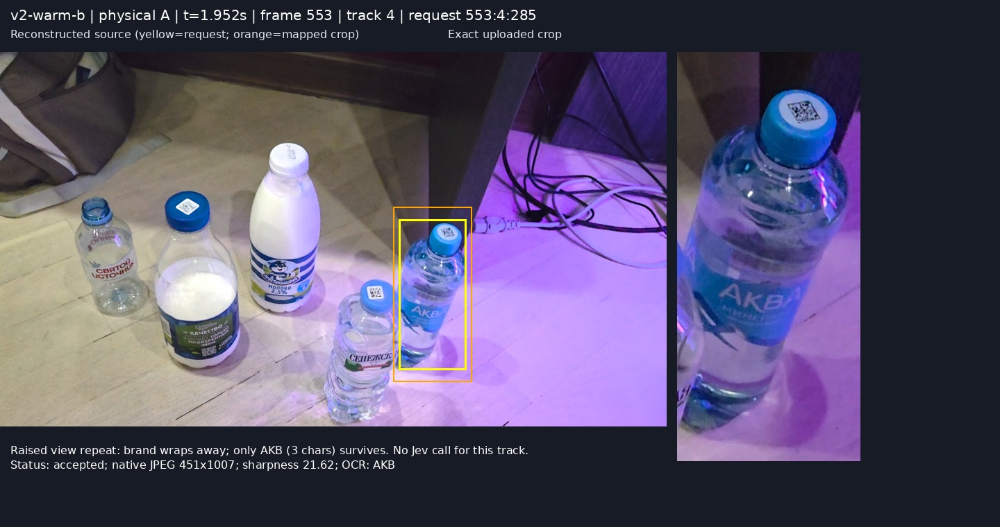
Raised view repeat: brand wraps away; only AKB (3 chars) survives. No Jev call for this track.
Exact native JPEG crop · Reconstructed native source{
"request_id": "553:4:285",
"run": "v2-warm-b",
"frame_id": 553,
"track_id": 4,
"session_version": 17,
"sample_video_timestamp": 1.951667,
"reconstructed_time": 1.6144,
"match_ncc": 0.9927342003303007,
"note": "Raised view repeat: brand wraps away; only AKB (3 chars) survives. No Jev call for this track.",
"panel": "553_4_285-panel.jpg",
"source": "553_4_285-source-reconstructed.jpg",
"crop": "../evidence/v2-warm-b/553_4_285-crop_jpeg.jpg",
"mapped_rect": {
"x": 2267,
"y": 895,
"w": 451,
"h": 1007
},
"ocr_text": "AKB",
"sharpness": 21.62
}v2-warm-a / 437:3:121
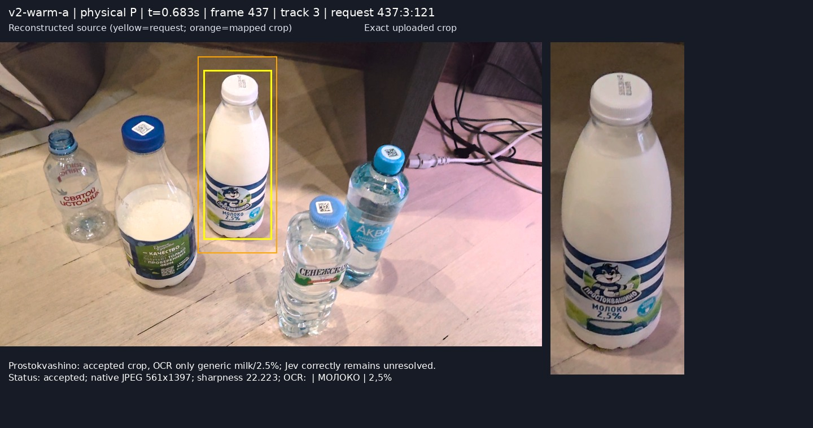
Prostokvashino: accepted crop, OCR only generic milk/2.5%; Jev correctly remains unresolved.
Exact native JPEG crop · Reconstructed native source{
"request_id": "437:3:121",
"run": "v2-warm-a",
"frame_id": 437,
"track_id": 3,
"session_version": 11,
"sample_video_timestamp": 0.683088,
"reconstructed_time": 0.5992000000000001,
"match_ncc": 0.9980392215455846,
"note": "Prostokvashino: accepted crop, OCR only generic milk/2.5%; Jev correctly remains unresolved.",
"panel": "437_3_121-panel.jpg",
"source": "437_3_121-source-reconstructed.jpg",
"crop": "../evidence/v2-warm-a/437_3_121-crop_jpeg.jpg",
"mapped_rect": {
"x": 1402,
"y": 100,
"w": 561,
"h": 1397
},
"ocr_text": " | МОЛОКО | 2,5%",
"sharpness": 22.223
}v3-warm-a / 452:4:140
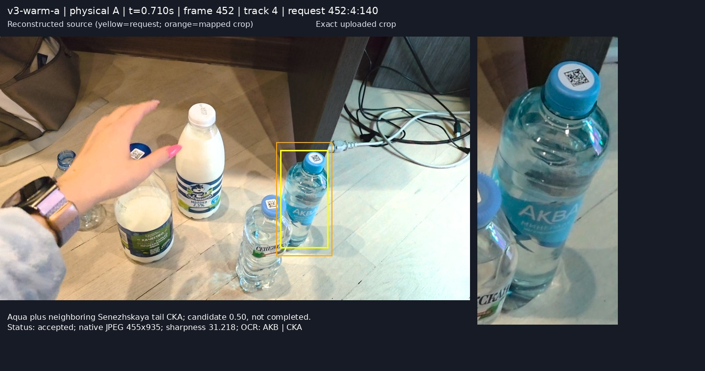
Aqua plus neighboring Senezhskaya tail CKA; candidate 0.50, not completed.
Exact native JPEG crop · Reconstructed native source{
"request_id": "452:4:140",
"run": "v3-warm-a",
"frame_id": 452,
"track_id": 4,
"session_version": 13,
"sample_video_timestamp": 0.710214,
"reconstructed_time": 0.5736134453781513,
"match_ncc": 0.9961453433517949,
"note": "Aqua plus neighboring Senezhskaya tail CKA; candidate 0.50, not completed.",
"panel": "452_4_140-panel.jpg",
"source": "452_4_140-source-reconstructed.jpg",
"crop": "../evidence/v3-warm-a/452_4_140-crop_jpeg.jpg",
"mapped_rect": {
"x": 2259,
"y": 864,
"w": 455,
"h": 935
},
"ocr_text": "AKB | CKA",
"sharpness": 31.218
}v3-warm-a / 463:7:160
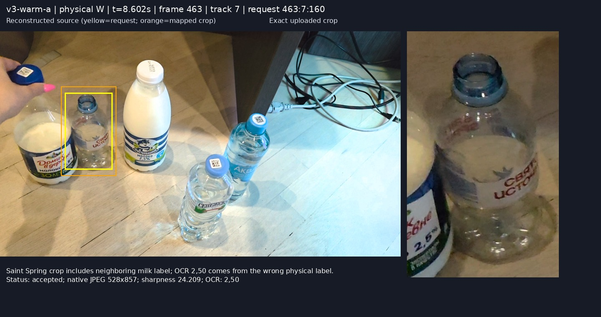
Saint Spring crop includes neighboring milk label; OCR 2,50 comes from the wrong physical label.
Exact native JPEG crop · Reconstructed native source{
"request_id": "463:7:160",
"run": "v3-warm-a",
"frame_id": 463,
"track_id": 7,
"session_version": 13,
"sample_video_timestamp": 8.602287,
"reconstructed_time": 8.233613445378152,
"match_ncc": 0.9979010418183838,
"note": "Saint Spring crop includes neighboring milk label; OCR 2,50 comes from the wrong physical label.",
"panel": "463_7_160-panel.jpg",
"source": "463_7_160-source-reconstructed.jpg",
"crop": "../evidence/v3-warm-a/463_7_160-crop_jpeg.jpg",
"mapped_rect": {
"x": 586,
"y": 529,
"w": 528,
"h": 857
},
"ocr_text": "2,50",
"sharpness": 24.209
}v3-warm-a / 455:3:148
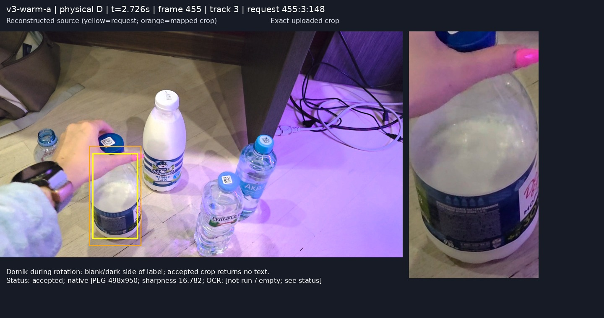
Domik during rotation: blank/dark side of label; accepted crop returns no text.
Exact native JPEG crop · Reconstructed native source{
"request_id": "455:3:148",
"run": "v3-warm-a",
"frame_id": 455,
"track_id": 3,
"session_version": 13,
"sample_video_timestamp": 2.725916,
"reconstructed_time": 2.5813445378151263,
"match_ncc": 0.9989993140960702,
"note": "Domik during rotation: blank/dark side of label; accepted crop returns no text.",
"panel": "455_3_148-panel.jpg",
"source": "455_3_148-source-reconstructed.jpg",
"crop": "../evidence/v3-warm-a/455_3_148-crop_jpeg.jpg",
"mapped_rect": {
"x": 849,
"y": 1099,
"w": 498,
"h": 950
},
"ocr_text": "",
"sharpness": 16.782
}v3-warm-b / 580:3:329
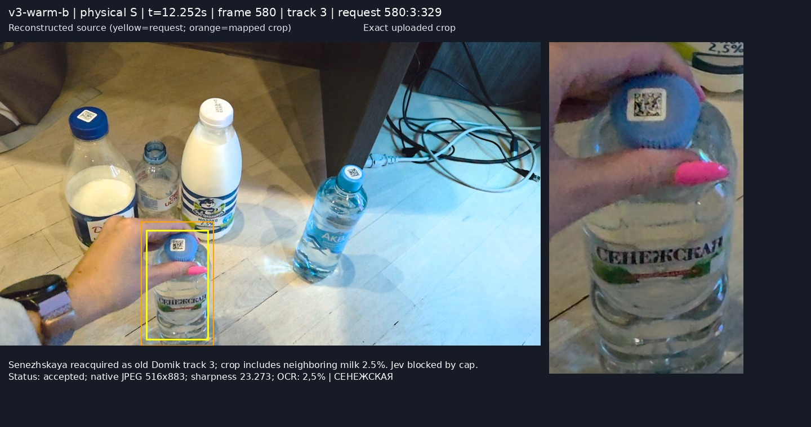
Senezhskaya reacquired as old Domik track 3; crop includes neighboring milk 2.5%. Jev blocked by cap.
Exact native JPEG crop · Reconstructed native source{
"request_id": "580:3:329",
"run": "v3-warm-b",
"frame_id": 580,
"track_id": 3,
"session_version": 19,
"sample_video_timestamp": 12.25208,
"reconstructed_time": 11.952100840336135,
"match_ncc": 0.9977521592514559,
"note": "Senezhskaya reacquired as old Domik track 3; crop includes neighboring milk 2.5%. Jev blocked by cap.",
"panel": "580_3_329-panel.jpg",
"source": "580_3_329-source-reconstructed.jpg",
"crop": "../evidence/v3-warm-b/580_3_329-crop_jpeg.jpg",
"mapped_rect": {
"x": 1003,
"y": 1277,
"w": 516,
"h": 883
},
"ocr_text": "2,5% | СЕНЕЖСКАЯ",
"sharpness": 23.273
}v3-warm-b / 571:3:311
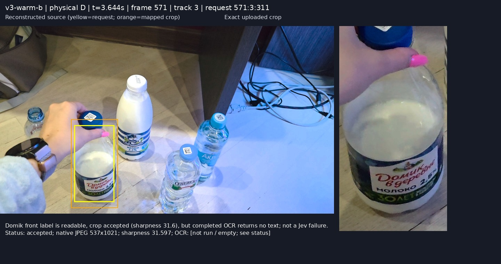
Domik front label is readable, crop accepted (sharpness 31.6), but completed OCR returns no text; not a Jev failure.
Exact native JPEG crop · Reconstructed native source{
"request_id": "571:3:311",
"run": "v3-warm-b",
"frame_id": 571,
"track_id": 3,
"session_version": 19,
"sample_video_timestamp": 3.643612,
"reconstructed_time": 3.4250420168067226,
"match_ncc": 0.9987870123113871,
"note": "Domik front label is readable, crop accepted (sharpness 31.6), but completed OCR returns no text; not a Jev failure.",
"panel": "571_3_311-panel.jpg",
"source": "571_3_311-source-reconstructed.jpg",
"crop": "../evidence/v3-warm-b/571_3_311-crop_jpeg.jpg",
"mapped_rect": {
"x": 816,
"y": 1074,
"w": 537,
"h": 1021
},
"ocr_text": "",
"sharpness": 31.597
}